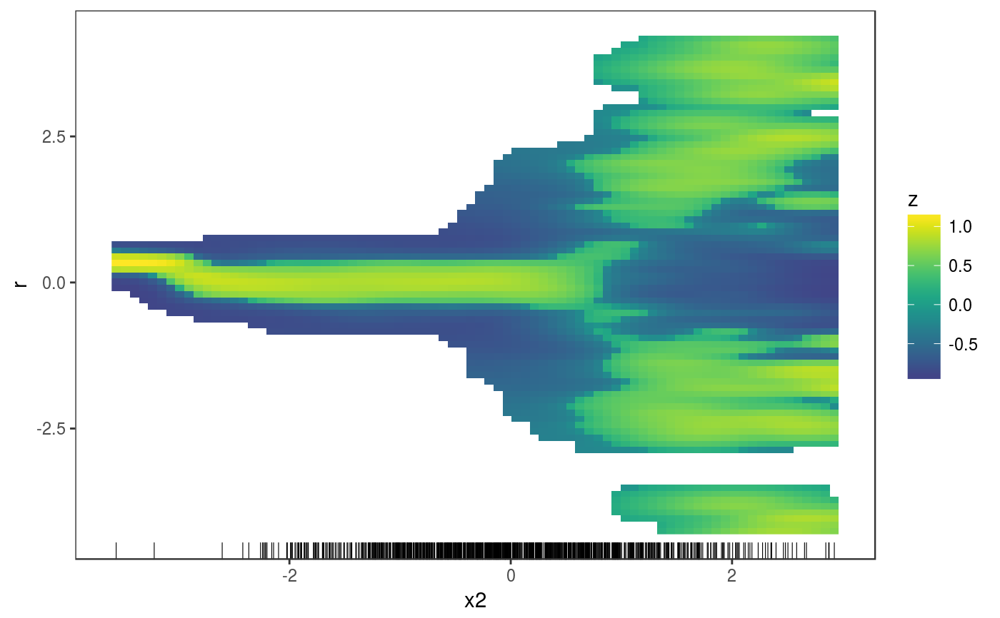

This layer calculates and plots how the empirical conditional density of the residuals, r, differs from its theoretical or model-based counterpart, along a covariate, x.
l_densCheck(n = c(80, 80), bw = NULL, tol = 1e-06, dFun = NULL, ...)
| n | vector of two positive integers, indicating the number of grid points at which the density is evaluated on the x and r axes. |
|---|---|
| bw | vector with two positive entries, indicating the bandwidth to be used
by the kernel density estimator of |
| tol | small positive numerical tolerance. The estimated density at a certain
location is set to |
| dFun | function used to compute the difference between the empirical (em) and theoretical (th)
conditional density of the residuals. By default it is |
| ... | graphical arguments to be passed to |
An object of class gamLayer.
This layer is mainly meant to work together with the check1D function. The default dFun
if compare the conditional distribution of the residuals with N(0, 1) or Unif(0, 1) densities,
depending on the residual type used in the check1D call.
library(mgcViz); # Dataset where variance increases linearly with x2, for x2 > 0.2 n <- 1e3 x1 <- rnorm(1e3) x2 <- rnorm(1e3) dat <- data.frame("x1"=x1, "x2"=x2, "y"=sin(x1) + 0.5*x2^2 + pmax(x2, 0.2)*rnorm(n)) b <- gam(y ~ s(x1)+s(x2), data=dat) b <- getViz(b) # (Red) Blue indicates area where the empirical density # of the residuals is (lower) higher than it should be under # the model (residuals should be N(0, sigma) here). # Here there are clear signs of heteroscedasticity: # the conditional variance is is increasing for x2 > 0.2. check1D(b, "x2") + l_densCheck() + l_rug()